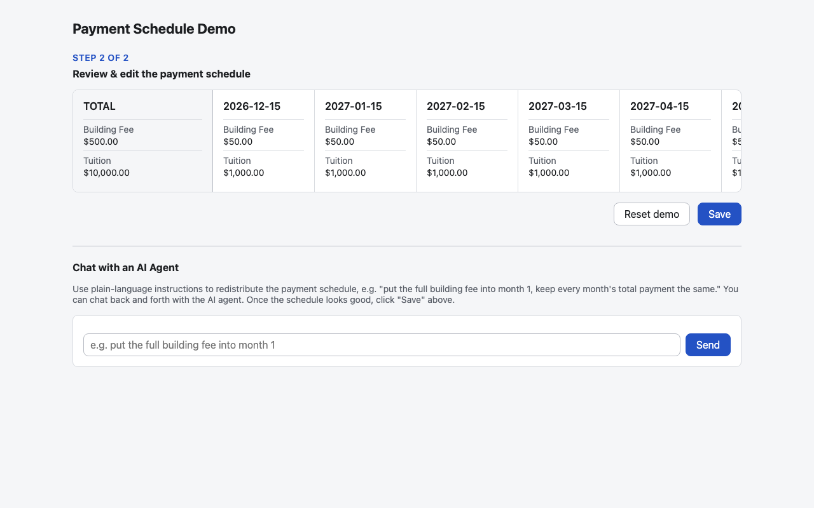

AI-assisted payment scheduling
The problem Splitting an invoice into payments, then changing the plan, is fiddly spreadsheet work.
What I built A React app where you create a schedule and then adjust it in plain language, such as "put the full building fee in month 1". Claude interprets the request, and the backend checks every number before it is shown.
Try the live demo